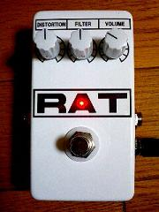
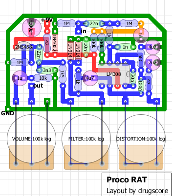

Proco RAT
2008年12月22日 カテゴリー：自作エフェクター（アナログ）

いわずと知れたディストーションペダル、Proco RATです。
▽回路図
TONEPAD RAT プロジェクトファイル ダウンロードページ
▽レイアウト

あえてオリジナルのままの定数で作りました。私のエフェクター自作方法のカテゴリに製作過程があります。
昔持っていたことがあるんですがそのときICはOP07というヤツでした。今回ICはLM308でパーツもたぶんグレードは良いものだと思います。まぁ特に良くなったという感じはないです。やっぱりRATだなぁという音です（なんじゃそりゃ）。
もともとLM308とかOP07とかいうICは音響用のICではなく測定器とかに向いているICのようで、帯域が狭いため高域が落ちてしまいます（高域を増幅できない）。ゴリさんがシミュレートされてますが、低消費電力のTL022などのICも高域が落ちるようです。これがRATの音を特徴付けているもののようで、性能のいいICに変えるときっとダメなのかもしれません。そのうちいろいろ試してみます。
↓試す予定
NJMOP07
OP07（アナデバ製）
OPA277
---以上2008年12月7日記載、以下追記---
上記のオペアンプを試してみました。
う～んたいして変わらない気が…やっぱり私の耳はダメですな。
気持ちOPA277は音がクリアな気がします。高域が出てるのかなぁ。少し高級なものだから思い込みかもしれません。
まぁ差し替えは可能ということで。
デザインはRATの白黒反転にしてみました。私のイメージではネズミは白です。
反転といえば…反転増幅が思い浮かびます。反転増幅バージョンのRATなんてのも面白いかもしれません。気が向いたら作るかも。